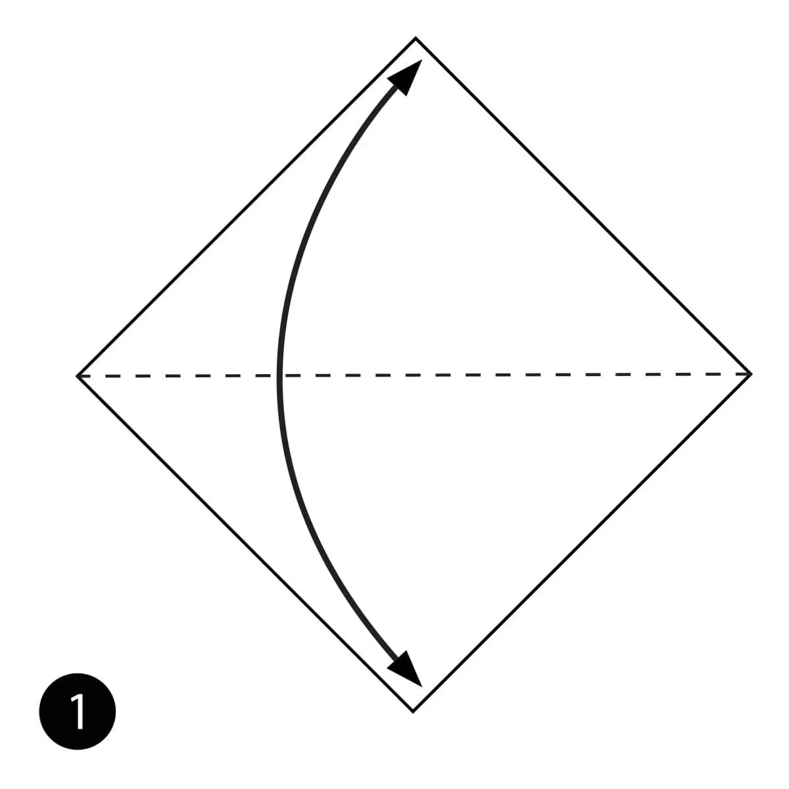
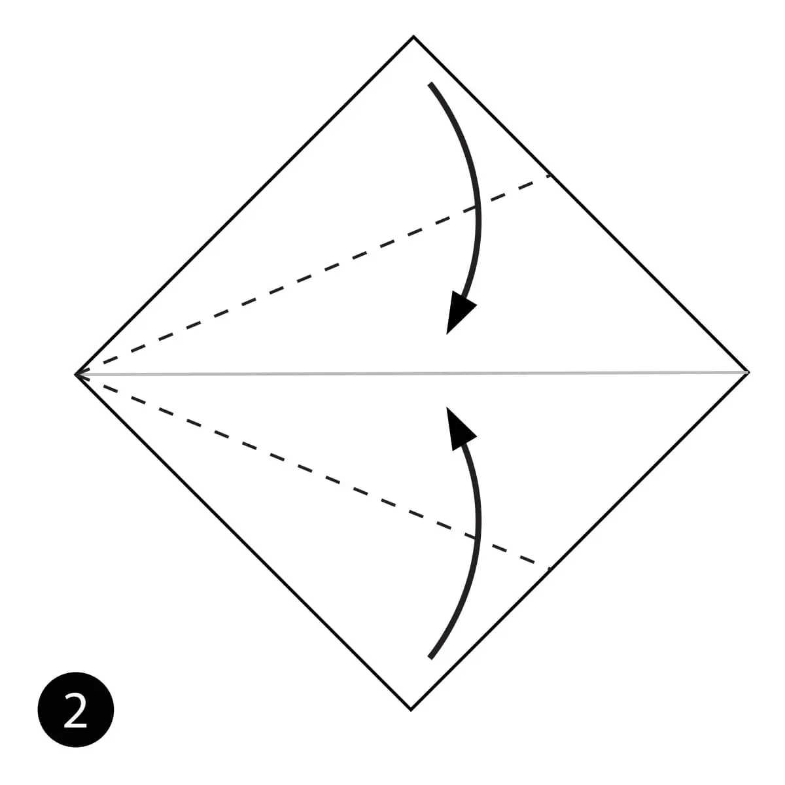
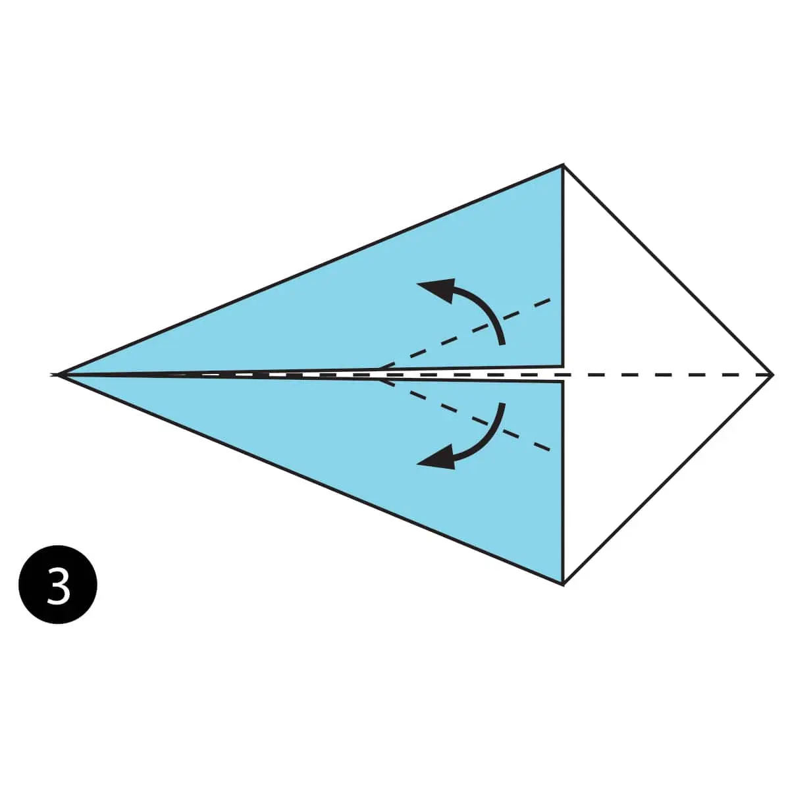
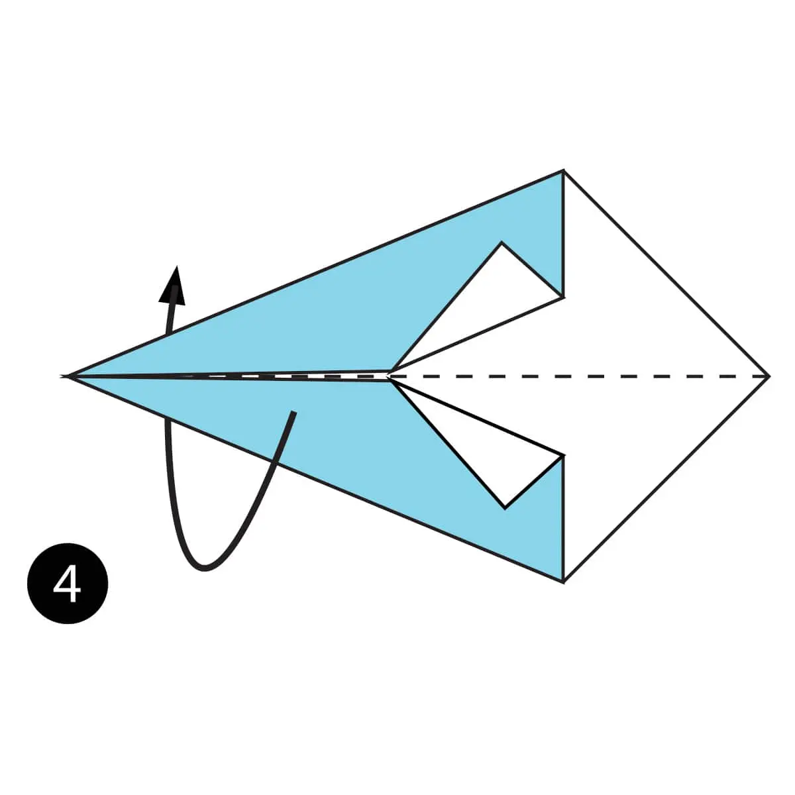
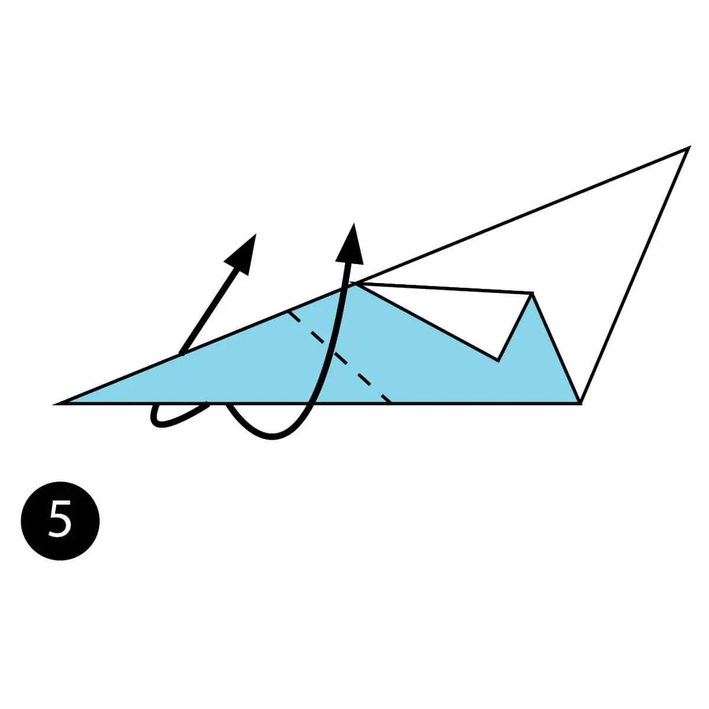
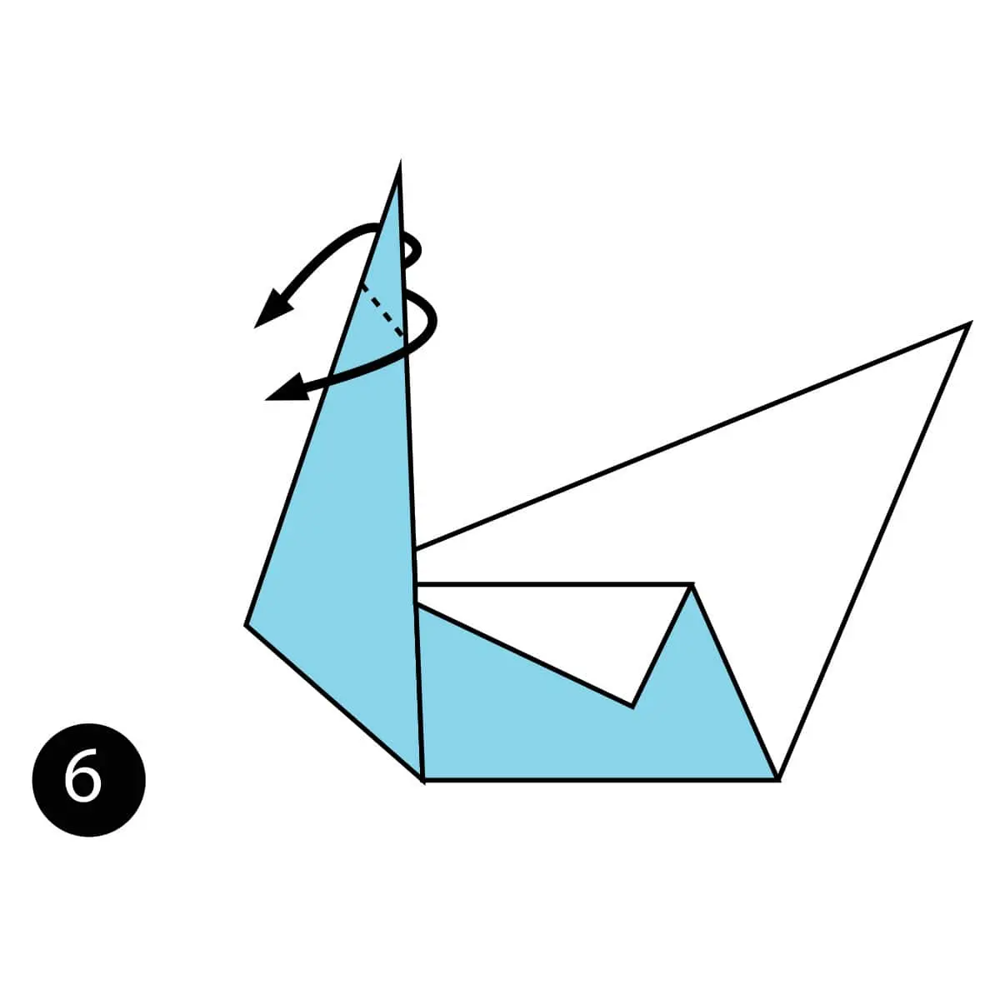
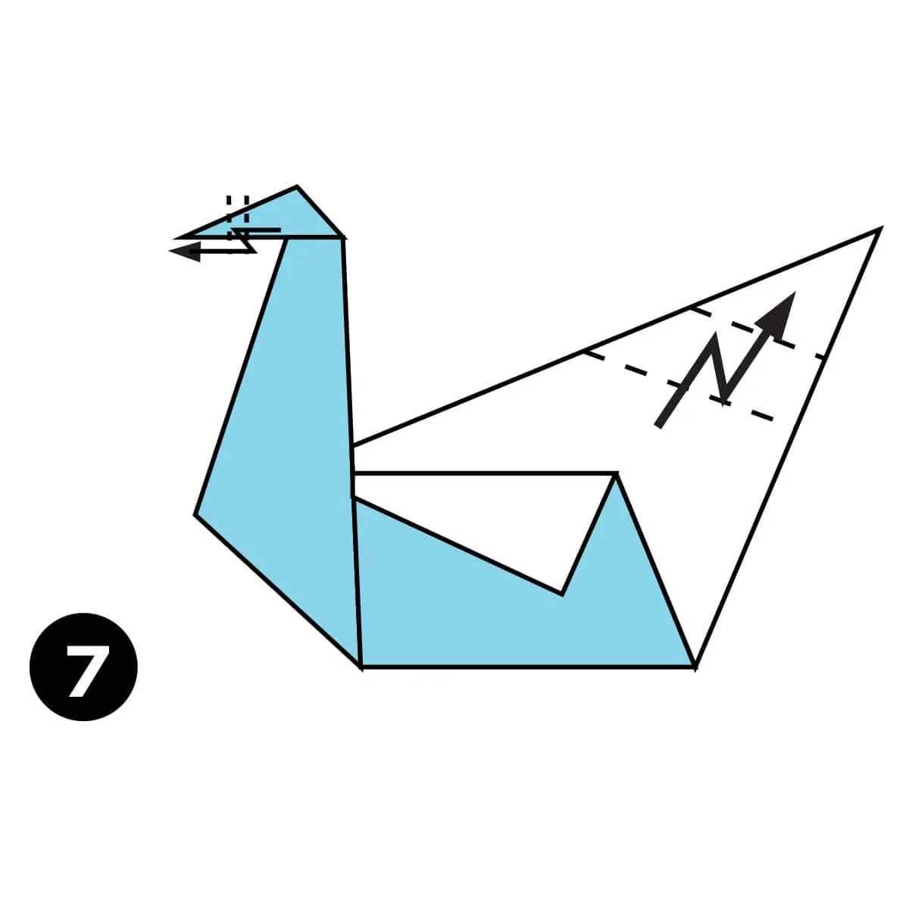

Make origami swan
Origami swan
5 fun facts about swans
- Swans are the largest members of the duck and goose family.
- Black swans are native to Australia.
- A male swan is called a cob, and a female swan is called a pen.
- Swans can fly as fast as 60 miles per hour!
- A baby swan is called a cygnet.
How to make an origami swan

- Step 1) Fold the paper in half and then unfold it.

- Step 2) Fold both sides in to the centre along the dotted lines.

- Step 3) Fold the top layers of paper out along the dotted lines.

- Step 4) Fold the paper in half bringing the bottom up and behind.

- Step 5) Make an Outside Reverse Fold along the dotted line.

- Step 6) Make another Outside Reverse Fold along the dotted lines.

- Step 7) Make a Crimp Fold on the head to form the beak and make another Crimp Fold on the back to form the tail.